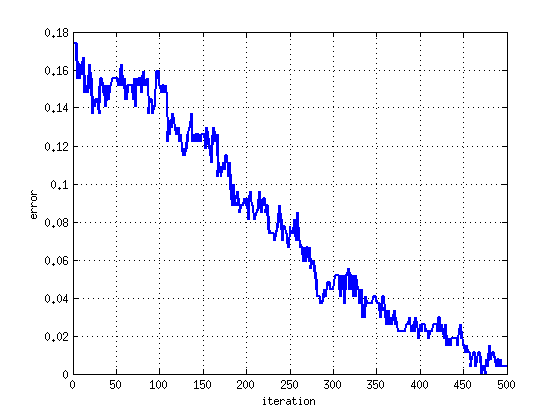

data_path = 'test_data.mat';
load(data_path);
nSamples = size(X, 1);
W = ones(nSamples, 1)*(1/nSamples);
estimate_cum = zeros(nSamples, 1);
alpha = zeros(nBoosts, 1);
error = zeros(nBoosts, 1);
randsample = @(d, n) arrayfun(@(x) find(rand(1)<= cumsum(d(:)), 1), 1:n);
nBoosts = 500;
sample_rate = 0.4;
for t = 1:nBoosts
idx = randsample(W, sample_rate*nSamples);
X_t = X(idx, :);
Y_t = Y(idx);
w_t = pinv(X_t'*X_t)*X_t'*Y_t;
estimate = sign(X*w_t);
err = 0.5 - 0.5*W'*(estimate.*Y);
alpha(t) = 0.5*log((1-err)/max(err,eps));
uW = W.*exp(-alpha(t)*estimate.*Y);
W = uW/sum(uW);
estimate_cum = estimate_cum + alpha(t)*estimate;
error(t) = sum(sign(estimate_cum) ~= Y)/nSamples;
plot(error(1:t), 'LineWidth', 2);
grid on; xlabel('iteration'); ylabel('error');
drawnow;
end
